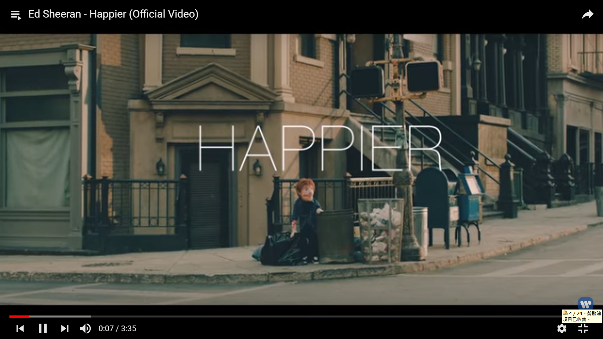

Ed Sheeran - Happier

Walking down 29th and park
漫步在街道上
I saw you in another's arm
看見你依偎在另一個人的臂彎裡
Only a month we've been apart
距離我們分手還不到一個月
You look happier
但你看上去是如此幸福
Saw you walk inside a bar
我目送你進入一間酒吧
He said something to make you laugh
看著他輕而易舉地把你逗笑
I saw that both your smiles were twice as wide as ours
看著你們沉浸在兩人世界裡，笑得旁若無人
Yeah, you look happier, you do
是呀，我不曾看過這麼快樂的你
Ain't nobody hurt you like I hurt you
不曾有人像我這樣把你狠狠傷透
But ain't nobody love you like I do
但再也不會有人像我一樣全心地愛著你
Promise that I will not take it personal
我答應你，不會鑽牛角尖地胡思亂想
Baby , If you're moving on with someone new
親愛的，假如有天你找到了能攜手向前的另一半
'Cause baby you look happier, you do
因為親愛的，你看起來是如此幸福
My friends told me one day I'll feel it too
朋友們都說，有天我也能對一切釋懷
And until then I'll smile to hide the truth
直到那天，我會笑著隱藏心如刀割的苦楚
But I know I was happier with you
除非身邊是你，我才能真的幸福
Sat in the corner of the room
我頹然坐在屋內的角落
Everything's reminding me of you
眼前所見的一切都能勾起與你的回憶
Nursing an empty bottle and telling myself
懷裡抱著空酒瓶，我輕聲問著自己
You're happier, aren't you?
「你應該也快活多了吧？是吧？」
Oh, ain't nobody hurt you like I hurt you
不曾有人像我這樣把你狠狠傷透
But ain't nobody need you like I do
但也沒有人像我一樣深切渴望著你
I know that there's others that deserve you
我明白你一直都值得更好的人
But my darling, I am still in love with you
但親愛的，我還無可救藥地愛著你呢
But I guess you look happier, you do
但我猜你的確比之前活得更自在吧
My friends told me one day I'll feel it too
朋友告訴我，有天我也能從情傷裡全身而退
I could try to smile to hide the truth
我可以用微笑去掩飾過往的傷痕
But I know I was happier with you
但事實是有你的時光裡，我才感受到幸福
Baby, you look happier, you do
親愛的，你看上去真的比過去快樂多了
I know one day you'd fall for someone new
我也知道總有那麼一天，你會重新墜入愛河
But if he breaks your heart like lovers do
但假如他像那些不成熟的愛人般，讓你心碎了
Just know that I'll be waiting here for you
希望你懂得，我會一直在這裡為你守候著